I decided to go forward with putting the datafield made with p5.js into a 3D space, and hopefully implement better interactivity. I did this using three.js. I had never used this library before so it was a steep learning curve, but I enjoyed the process, despite thinking there are more developments I could have made.
I started out by following a very helpful tutorial by Daniel Waldow, explaining how to create your first three.js project. This helped me get to grips with meshes, geometries, a scene, and a camera.
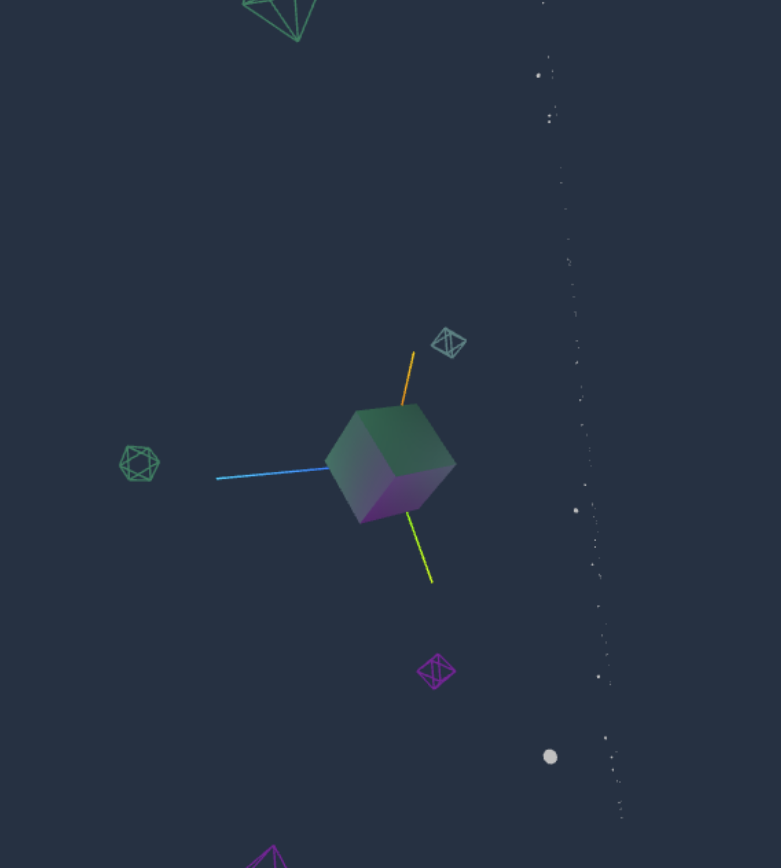After setting up lights and axes, I tried to instantiate my particles but ended up with them in a few strange positions. It was here I struggled with the coordinate system and the scale of different objects in the scene.
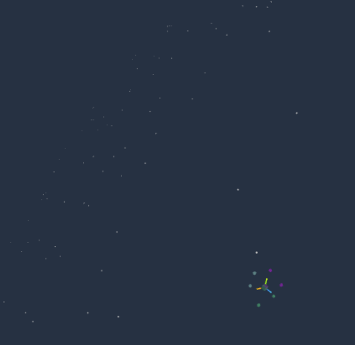 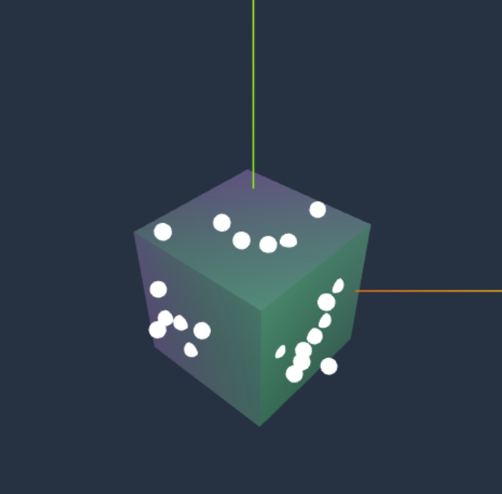 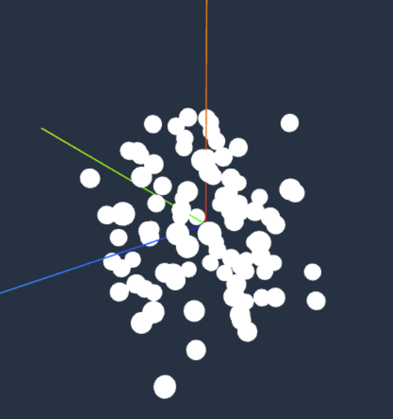Eventually I turned my box mesh into a room for the particles to inhabit. I wanted to treat this as the walls like I had done in previous sketches. Then I could actually make the flowfield grid for the particles to move along and also add collision detection.
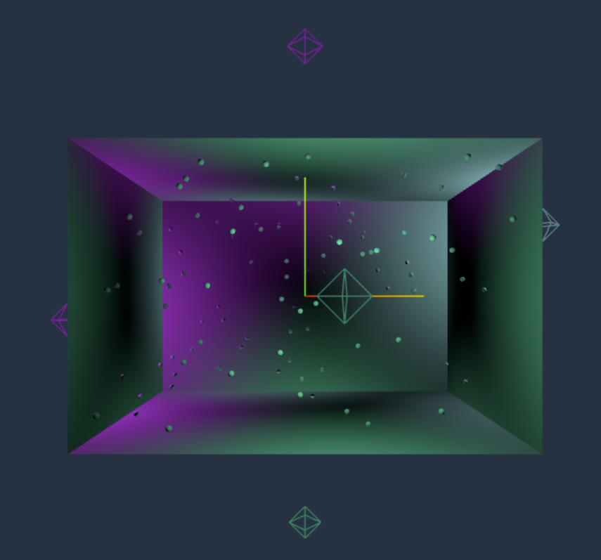Once the particles were moving around the flowfield, I changed the room mesh to a cylinder to be similar to the tubular shape of plant roots. I also started thinking about the sketch as a sort of terrarium, and considered adding abstract plant shapes to communicate more clearly what the work is about.
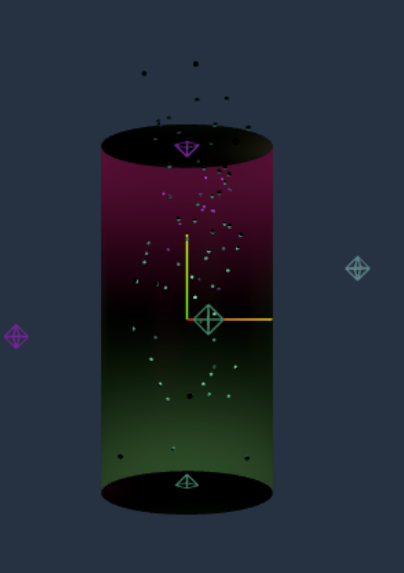After this I started to add the data visualisation aspect of the idea. I used the same logic of particles changing colour if at their index the data was higher than the threshold. I also attemped to add collision detection with the walls, but could not get it to work along the z-axis.
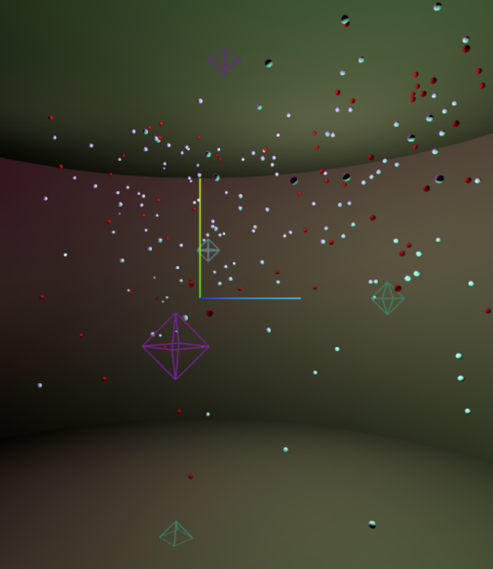I changed the colour scheme to something more appealing by altering the light values. I had stored them in an array previously and so it was a quick process.
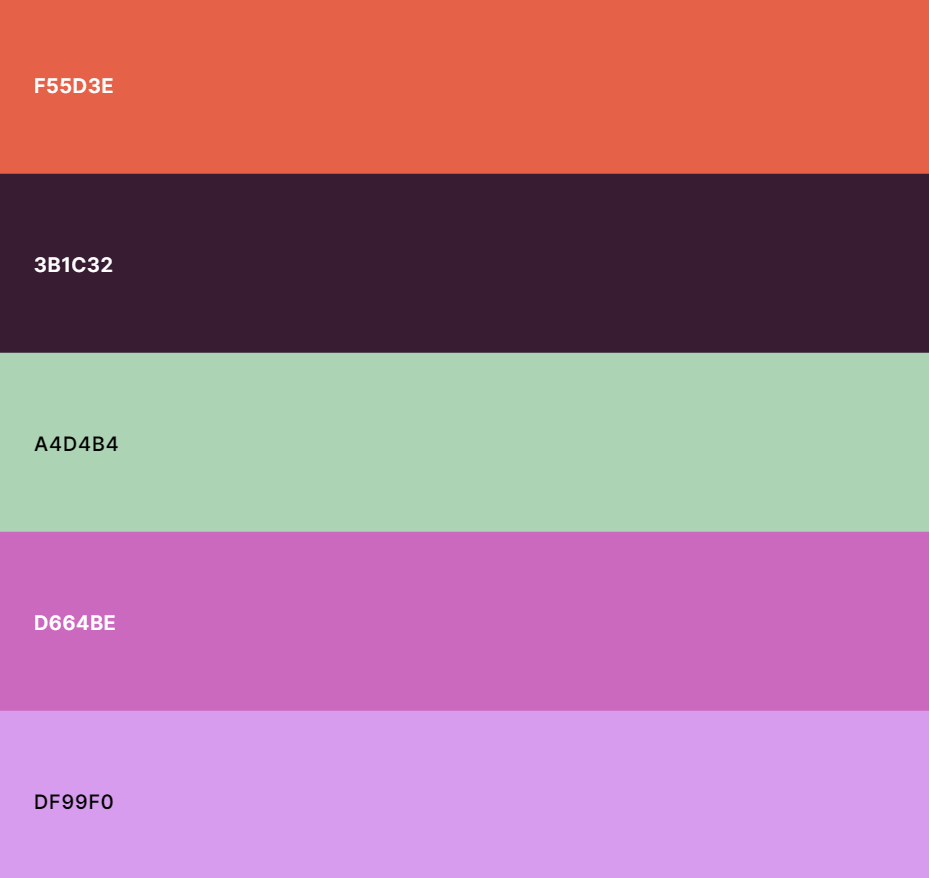 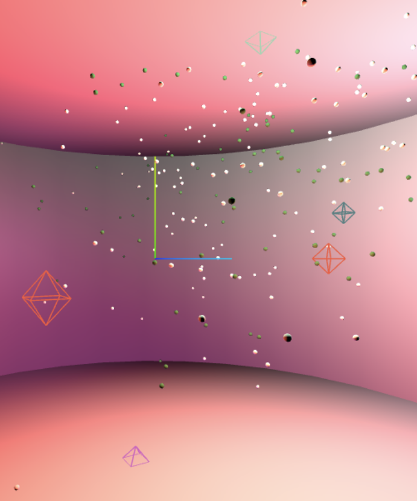To try and add more clarity to the ideas behind the sketch, I sourced sounds from OpenGameArt.org. I found different sounds with a twinkling effect but went with a Forest Ambience mp3 by Rick Hoppmann for the 29th Ludum Dare (a game jam competition). Through this process I learnt that Chrome and some other browsers do not allow autoplay to improve the user experience, and so I added a fix that resumed the audio after a user gesture (that I could hide later).
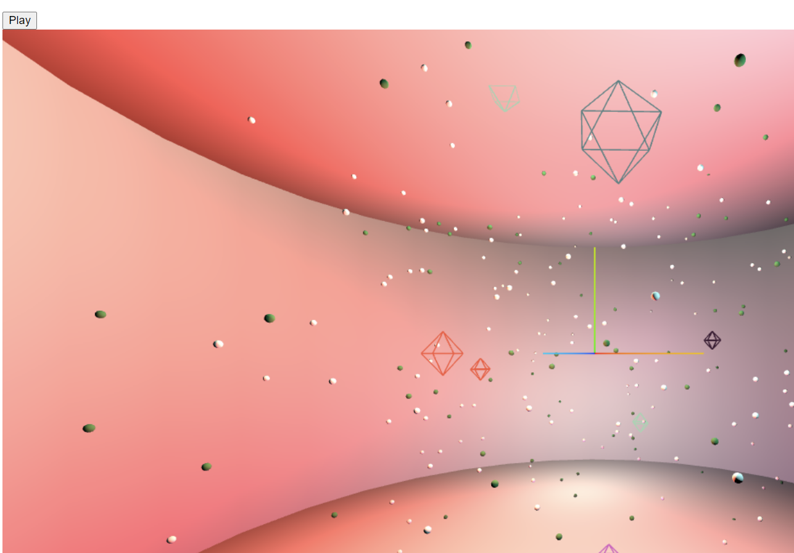I still felt dissatisfied with how abstract the piece was, and so I added a simple instanced grass implementation by Felix Mariotto and user prisoner849 that I modified to my purposes. It ended up being more complicated than expected due to my lack of experience with plane geometries and three.js in general. It was my first use of instanced meshes and I realised too late that it would have been a much easier way to create and control my particles.
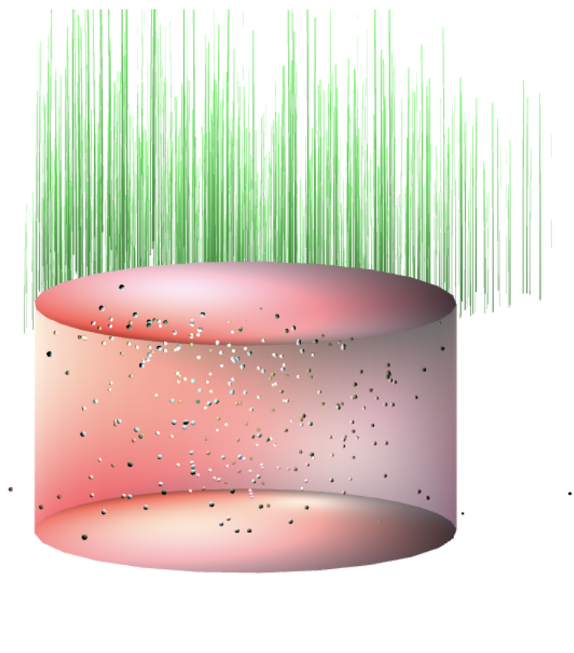 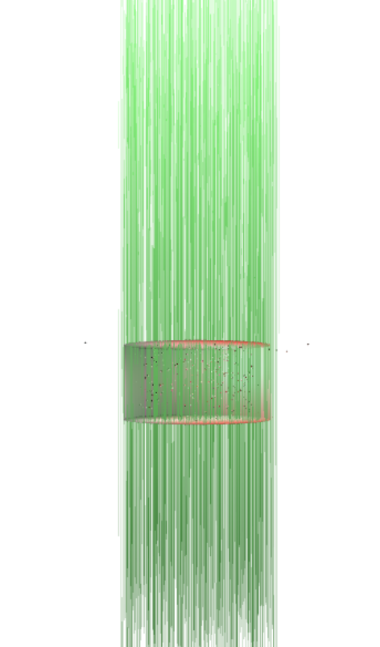 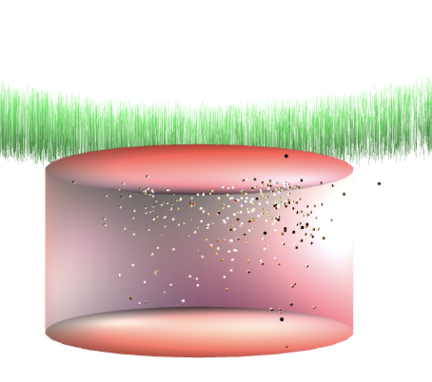 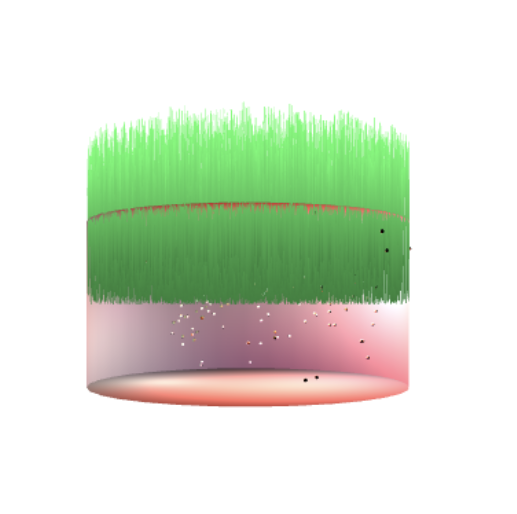examples of me misunderstanding plane geometry 3-4 times
Throughout this project I challenged myself by learning new equations, new processes, and new forms of visualisation. In trying to capture the seemingly magical nature of mycorrhizal networks, I think I lost the concrete principles of data visualisation. Despite my final outcome being interactive and aesthetically pleasing, I do not think I was able to effectively convey a story about mycellium and electricity with the piece. I am happy with the technical aspects of the project, but believe I could have taken it further by making the breach-of-threshold concept more clear. I could have had text on the screen explaining the amount of voltage, and relating it the amount of particles that change colour. By choosing to create the final outcome in 3D with a library I wasn't comfortable with, I sacrificed a lot of time just to make things work. However, I am grateful I got the opportunity to develop these skills and hope to continue development on this project in the future.